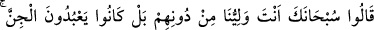
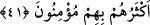

melekler göğe , cinler ise yere mensuptur. Müşrikler Allah’ın gökte olduğuna
inanırlardı.
(Müşriklerin taptıkları arasında) melekler tahsis edilmiştir. Çünkü, melekler onların
ortak koştukları şeylerin en şereflileri ve onlardan hitaba uygun olanlarıdır. Onlara
ibâdet şirkin temeli ve aslıdır. Meleklerin mâbud olma mertebesinden aşağı oldukları
ve müşriklerin kendilerine ibâdetinden uzak olduklarının ortaya çıkmasıyla diğer ortak
koştukları şeylerin durumu evleviyetle ortaya çıkar.
41. (Melekler de:) Sen yücesin, bizim dostumuz onlar değil, sensin. Belki onlar
cinlere tapıyorlardı. Çoğu onlara inanmıştı; diyecekler.
Melekler de bu durumdan kendilerini uzak tutarak: “Sen yücesin,” sen şirkten
münezzehsin. Keşfü’l-esrâr’da “Pak ve kusursuzluk sana mahsustur” der, “bizim
dostumuz onlar” müşrikler “değil, sensin.” Yâni bizimle onlar arasında hiçbir dostluk
yoktur. Hâşâ ki biz onlara tapılmasına rızâ gösterelim.
Sonra melekler sözü başka bir konuya getirdiler ve şöyle diyerek onların gerçekten
kendilerine ibâdet ettiklerini reddettiler: “Belki onlar” cehâlet ve azgınlıklarından
dolayı “cinlere” Allah’tan başkasına ibadet etme husûsunda kendilerine itâat
ettiklerinden şeytanlara “tapıyorlardı.”
Denilir ki: Şeytanlar onlara temessül eder/görünür, onlar da şeytanları melek
zanneder ve onlara taparlardı. Duyulardan gizli ve örtülü olduğu için şeytanlardan cin
diye söz edilmiştir. Bundan dolayı bazıları meleklere de ‘cin’ demiştir.
“Çoğu onlara” cinlere, söyledikleri yalanlara ve meleklerin Allah’ın kızları
olduğuna “inanmıştı;” tasdik etmiş, onlara tâbi olmuş, onların kendilerine şefâat
edeceğine dair ortaya attıkları söze aldanmışlardı “diyecekler.”
“Çoğu” burada hepsi mânâsınadır. Cümlenin akışından anlaşıldığı üzere zamir
müşriklere âiddir. Yâni müşriklerin hepsi, demektir. Bazıları zamîrin insanlara âid
olduğunu “çoğu” ifâdesinin de kendi mânâsına olduğunu söylemiştir. Yâni insanların
çoğu, demektir.
Âyette şuna işâret vardır: “Bir topluluğun şeytanın sözüyle meleklere ibadet ettiği ve
kıyâmet günü meleklerin onlardan berî ve uzak olduklarını ifâde ettikleri gibi aynı
şekilde anne babanın, üstadların veya hemşehrilerinin sözüyle Allah’a ibadet
edenlerden; ya da yahûdi, hristiyan, sabiîler, mecûsîler, bid’at ve hevâ ehlinin yaptığı
gibi taassup ve hevâ ile Allah’a ibadet edenlerden de Allah Teâlâ teberrî eder,
uzaklaşır. “Ben, başkasının sözüyle ve bana hevâ ile ibâdet edenin sözüyle ibâdet